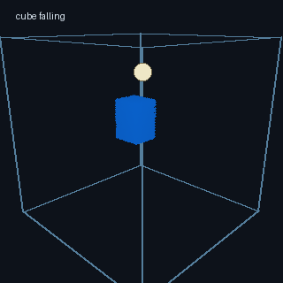
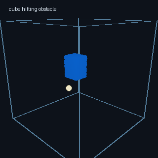
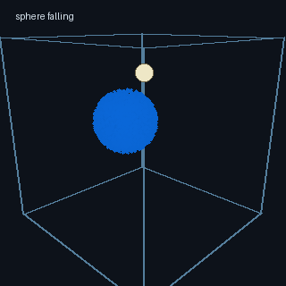
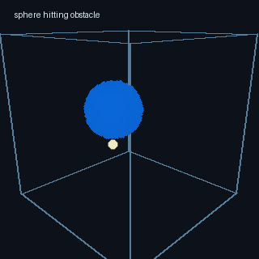
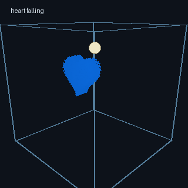
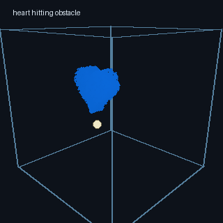
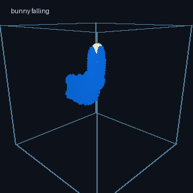
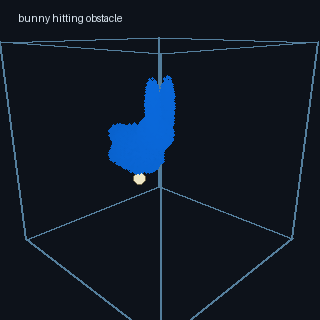

每一帧仿真按照 handout 中建议的流程组织：
integrate particles
handle particle collisions
push particles apart
transfer particle velocities to grid
solve incompressibility
transfer grid velocities back to particles
update visualization colors
粒子积分阶段对粒子速度加入重力，再用显式欧拉更新位置。之后进行容器边界和球形障碍物碰撞处理，保证粒子不会穿出容器或进入障碍物内部。
粒子到网格的传输使用 MAC 交错网格，分别在 u/v/w 三组 face-centered velocity field 上进行三线性 splat。每个粒子根据自身位置把速度贡献到附近 8 个速度采样点，并使用权重归一化得到网格速度。
不可压缩求解在网格上进行。程序标记 AIR / FLUID / SOLID 三类 cell，对 FLUID cell 计算速度散度，并用 red-black Gauss-Seidel 迭代修正相邻 face velocity，从而降低散度。相比直接并行更新所有 cell，red-black 分组避免了相邻 cell 同时写同一个 face 带来的数值不稳定。
网格到粒子的速度回传支持 PIC/FLIP 混合：
v_pic = sample(current_grid_velocity)
v_flip = old_particle_velocity + sample(current_grid_velocity - old_grid_velocity)
v_new = (1 - flipRatio) * v_pic + flipRatio * v_flip
因此 flipRatio = 0 时为 PIC，flipRatio = 1 时为 FLIP，默认使用 0.95 作为 FLIP95。
为了提高稳定性，项目实现了粒子间距修正。粒子根据所在网格 cell 建立空间哈希，只检查相邻 cell 中的粒子，从而避免全局两两碰撞检测。若粒子距离过近，则沿连线方向做位置修正，减少粒子团聚和局部过密。
边界方面，容器壁面速度设为 0；球形障碍物既参与粒子碰撞，也在网格 solid face 上提供障碍物速度，使移动障碍物和压力投影阶段的边界条件保持一致。
运行方式如下：
uv sync
uv run python main.py
Demo 使用 Taichi GGUI 渲染 3D 粒子、容器线框和球形障碍物。启动后默认处于暂停状态，可以先用鼠标放置障碍物，再按 Space 开始仿真。支持以下交互：
Space：开始、暂停、继续仿真。[ / ]：减小或增大时间步长。, / .：连续调整 flipRatio。1 / 2 / 3：切换 PIC、FLIP95、FLIP。C：按速度、密度、压力切换粒子颜色。V：切换初始水体形状，包括 cube、sphere、heart、bunny。Q / E：缩放视角。R：重置当前场景。下面展示四种初始水体形状。每种形状包含两个结果：正常下落，以及下落过程中碰到球形障碍物。
正常下落：

碰到障碍物：

正常下落：

碰到障碍物：

正常下落：

碰到障碍物：

正常下落：

碰到障碍物：
